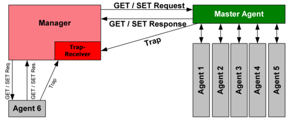

Агентами в SNMP являются программные модули, которые работают в управляемых устройствах. Агенты собирают информацию об управляемых устройствах, в которых они работают, и делают эту информацию доступной для систем управления сетями (network management systems - NMS) с помощью протокола SNMP. Эта модель представлена графически на рисунке 1.
Управляемое устройство может быть узлом любого типа, находящимся в какой-нибудь сети: это хосты, служебные устройства связи, принтеры, роутеры, мосты и концентраторы. Так как некоторые из этих систем могут иметь ограниченные способности управления программным обеспечением (например, они могут иметь центральные процессоры с относительно малым быстродействием, или ограниченный объем памяти), программное обеспечение управления должно сделать допущение о наименьшем общем знаменателе. Другими словами, программы управления должны быть построены таким образом, чтобы минимизировать воздействие своей производительности на управляемое устройство.
Так как управляемые устройства содержат наименьший общий знаменатель программного обеспечения управления, тяжесть управления ложится на NMS. Поэтому NMS обычно являются компьютерами калибра АРМ проектировщика, которые имеют быстродействующие центральные процессоры, мегапиксельные цветные устройства отображения, значительный объем памяти и достаточный объем диска. В любой управляемой сети может иметься одна или более NMS. NMS прогоняют прикладные программы сетевого управления, которые представляют информацию управления пользователям. Интерфейс пользователя обычно базируется на стандартизированном графическом интерфейсе пользователя (graphical user interface - GUI).
Сообщение между управляемыми устройствами и NMS регулируется протоколом сетевого управления. Стандартный протокол сети Internet, Network Management Framework, предполагает парадигму дистанционной отладки, когда управляемые устройства поддерживают значения ряда переменных и сообщают их по требованию в NMS. Например, управляемое устройство может отслеживать следующие параметры: